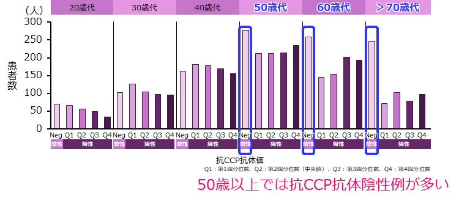

対オレンシア①高齢者
EORAは、YORAに比べセロポジが少ない（NinJa2014）
抗CCP抗体価と陽性率はRA発症年齢の影響を受ける：日本の全国規模のRAデータベースに基づく解析
- ●NinJa2014のデータよりRA発症年齢とRF/抗CCP抗体陽性率を検討した。
- ●EORA（高齢発症RA/65歳以上）とYORA（若年発症RA/65歳未満）に層別して解析（4388例）、さらにRA発症年齢（10歳毎）に層別して解析を行った。
- ●EORAの方がRF・抗CCP抗体陽性率が低かった。
- ●RA発症年齢が50歳以上の群では抗CCP抗体陰性例が多く観察された。
| RF陽性率 | 抗CCP抗体陽性率 | |
|---|---|---|
| EORA | 62.4% | 62.30% |
| YORA | 73.30% | 78.10% |

OREは高齢者をターゲットとしているが、EORAはYORAに比べセロポジが少ない
Eri Kato, ACR2016#503